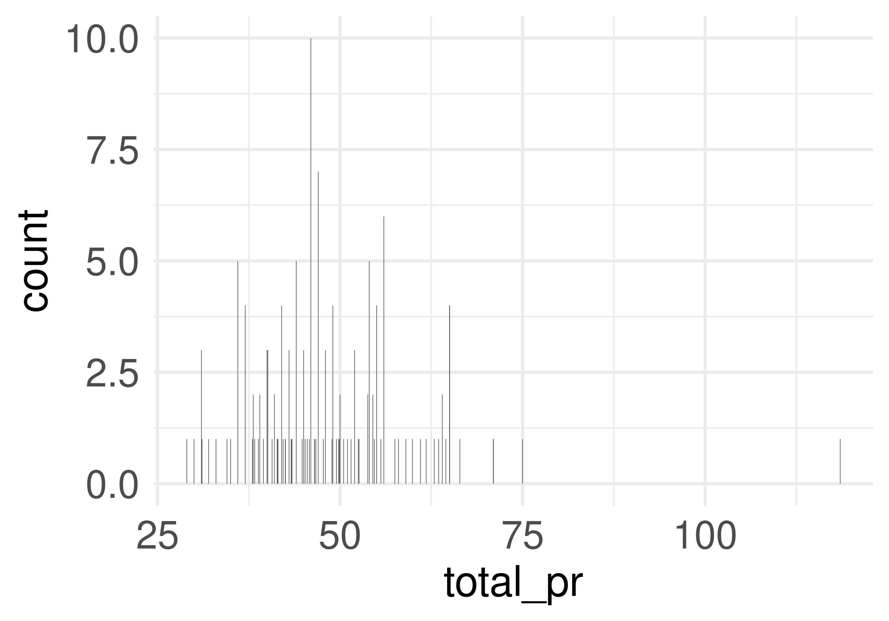
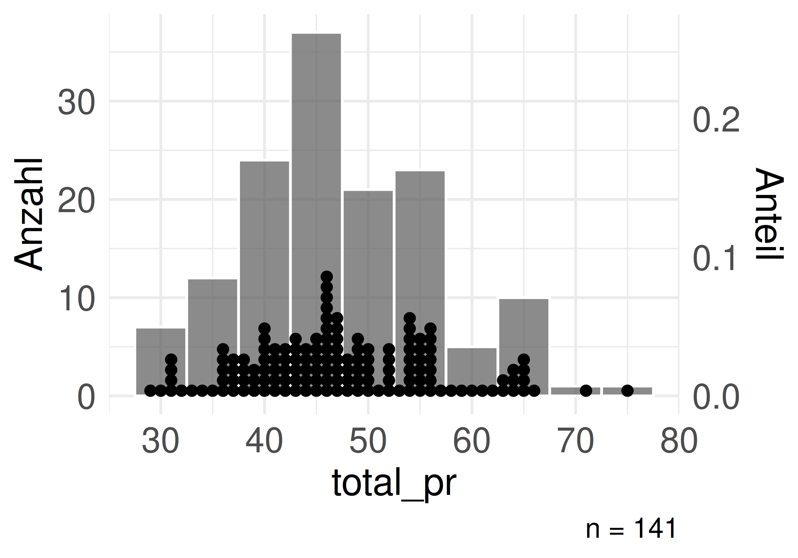
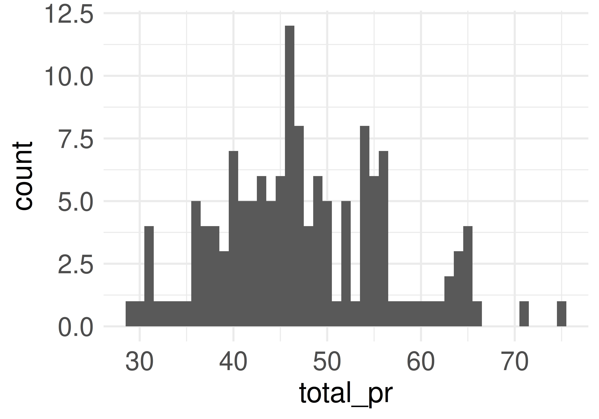
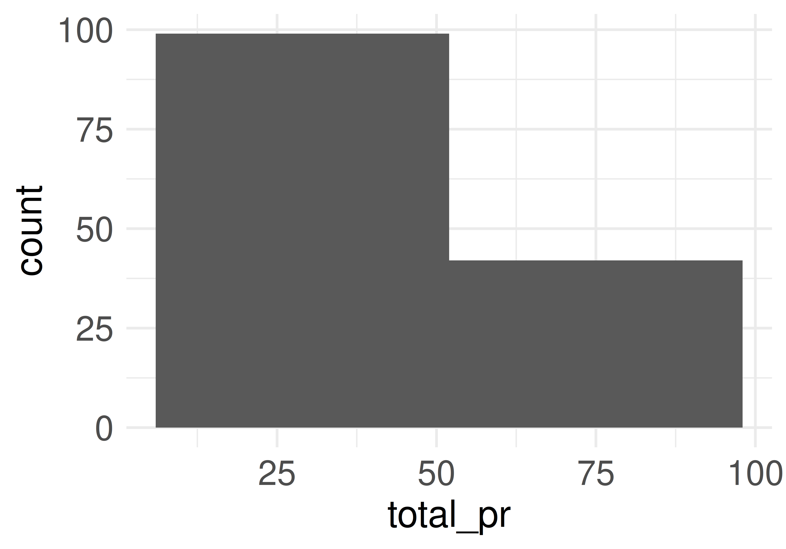
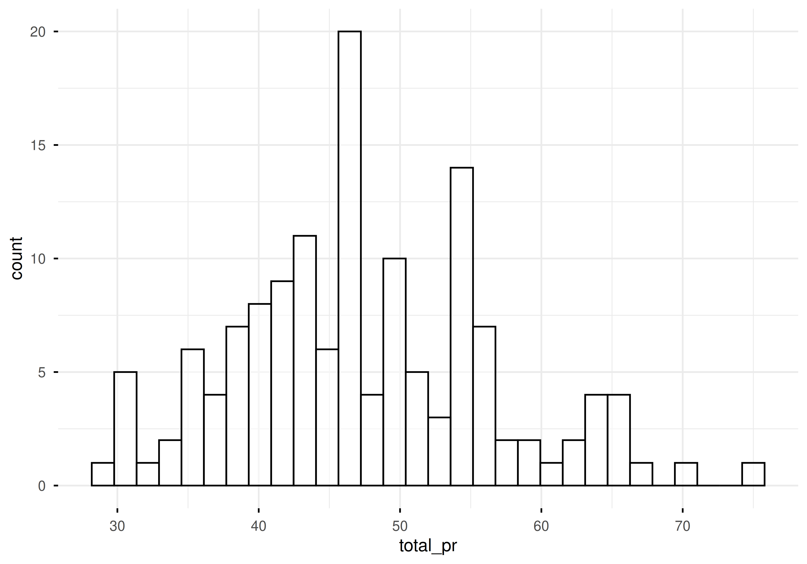
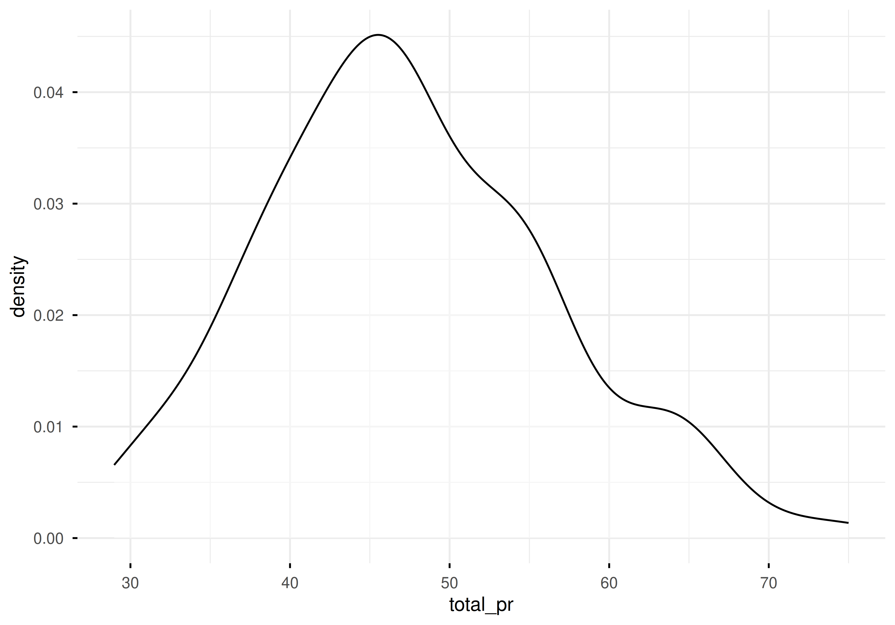
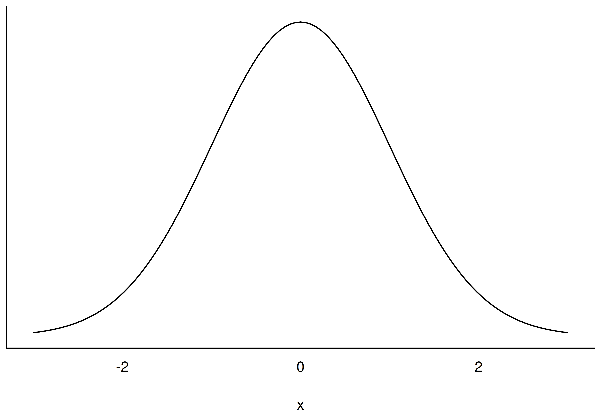
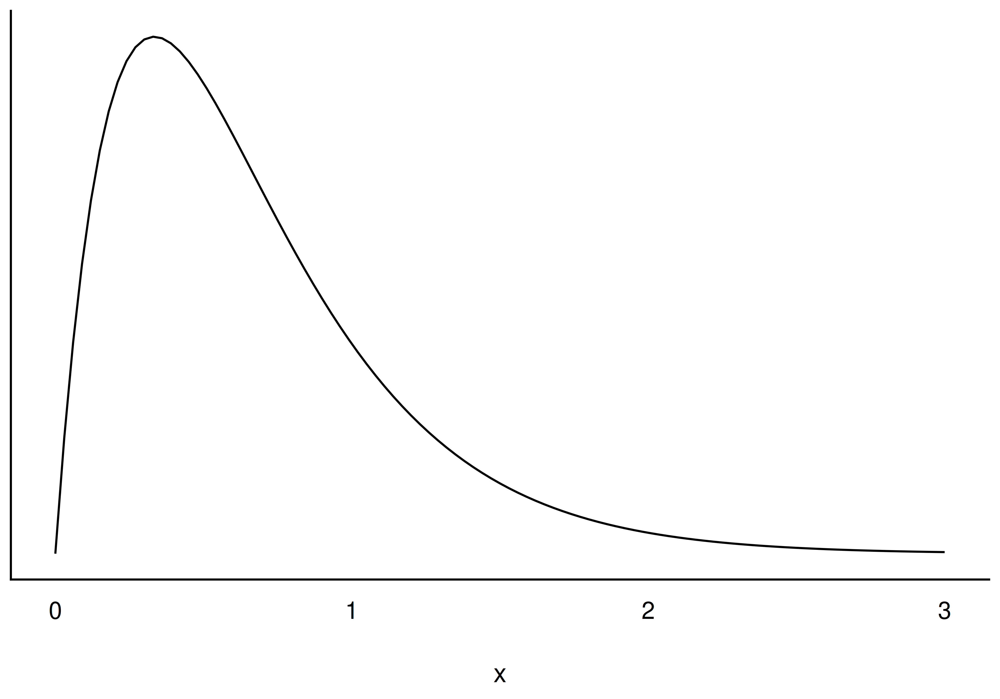

Statistik1
Daten verbildlichen
Einstieg
Lernziele
- Sie können erläutern, wann und wozu das Visualisieren statistischer Inhalte sinnvoll ist.
- Sie kennen typische Arten von Datendiagrammen.
- Sie können typische Datendiagramme mit R visualisieren.
- Sie können zentrale Ergebnisse aus Datendiagrammen herauslesen.
Einstieg
Benötigte R-Pakete und Daten
Neben tidyverse und easystats benötigen wir in diesem Kapitel:
Wir arbeiten wieder mit dem Datensatz mariokart.
Einstieg
Wozu das alles?
Ein Bild sagt mehr als 1000 Worte — Datendiagramme helfen, Erkenntnisse aus Daten zu ziehen, ohne mühsam einzelne Zahlen zu vergleichen.
Einstieg
Ein Dino sagt mehr als 1000 Worte
Gleiche Kennwerte, ganz andere Bilder
{kind=link}
- Verschiedene Datensätze können (nahezu) identische Kennwerte (Mittelwert, Streuung, Korrelation) haben — und trotzdem völlig verschieden aussehen.
- Dasselbe zeigt “Anscombes Quartett”: vier grundverschiedene Streudiagramme mit fast identischen Statistiken.
- Fazit: Eine Visualisierung enthüllt oft, was eine Kennzahl verhüllt.
Ein Dino sagt mehr als 1000 Worte
Definition: Datendiagramm
Definition: Datendiagramm
Ein Datendiagramm (kurz: Diagramm) ist ein Diagramm, das Daten und Statistiken zeigt, mit dem Zweck, Erkenntnisse daraus zu ziehen.
Ein Dino sagt mehr als 1000 Worte
Grenzen der Dimensionalität
{kind=link}
Ein Bild kann nur eine begrenzte Anzahl an Variablen sinnvoll zeigen — vielleicht vier bis sechs. Bei mehr Variablen brauchen wir Statistik statt (nur) Bilder.
Ein Dino sagt mehr als 1000 Worte
Nomenklatur von Datendiagrammen
Eine kleine Nomenklatur
| Erkenntnisziel | qualitativ | quantitativ |
|---|---|---|
| Verteilung | Balkendiagramm | Histogramm / Dichtediagramm |
| Zusammenhang | gefülltes Balkendiagramm | Streudiagramm |
| Unterschied | gefülltes Balkendiagramm | Boxplot |
Nomenklatur von Datendiagrammen
Verteilungen verbildlichen
Definition: Verteilung
Definition: Verteilung
Eine (Häufigkeits-)Verteilung einer Variablen \(X\) schlüsselt auf, wie häufig jede Ausprägung von \(X\) ist.
Verteilungen verbildlichen
Verteilung einer nominalen Variable: Balkendiagramm
{kind=link}
cond: horizontal und vertikalEin Balkendiagramm zeigt Häufigkeiten von Kategorien als Balken — die Länge ist proportional zur Häufigkeit. Die Ausrichtung (horizontal/vertikal) ist Geschmackssache.
Verteilungen verbildlichen
Syntax: Balkendiagramm mit ggpubr
{kind=link}
ggbarplot()Verteilungen verbildlichen
Verteilung einer quantitativen Variable


Bei vielen Ausprägungen ist ein Balkendiagramm unübersichtlich. Lösung: Werte in Gruppen (Klassen) zusammenfassen — das ergibt ein Histogramm.
Verteilungen verbildlichen
Definition: Histogramm
Definition: Histogramm
Ein Histogramm ist ein Diagramm zur Darstellung der Häufigkeitsverteilung einer quantitativen Variablen. Die Daten werden in Klassen eingeteilt, die durch Balken dargestellt werden; die Balkenhöhe zeigt die Häufigkeit pro Klasse.
Verteilungen verbildlichen
Wie viele Balken? Nicht zu viele, nicht zu wenige


Es gibt keine feste Regel für die Balkenanzahl — nur: nicht zu grob, nicht zu fein.
Verteilungen verbildlichen
Histogramm vs. Dichtediagramm


Definition: Dichtediagramm
Ein Dichtediagramm visualisiert die Verteilung einer stetigen Variablen — geglättet, sodass Rauschen weniger stört als beim Histogramm.
Verteilungen verbildlichen
Histogramm + Dichtelinie kombiniert
{kind=link}
total_prVerteilungen verbildlichen
Verteilungsformen


{kind=link}
Verteilungen verbildlichen
Spezialfall Normalverteilung
Definition: Normalverteilung
Definition: Normalverteilung
Normalverteilungen haben eine charakteristische, symmetrische Glockenform. Sie unterscheiden sich in Mittelwert \(\mu\) und Streuung \(\sigma\) — diese beiden Parameter bestimmen den gesamten Kurvenverlauf.
Kurzschreibweise: \(X \sim \mathcal{N}(\mu, \sigma)\)
{kind=link}
Spezialfall Normalverteilung
Beispiele normalverteilter Variablen
Körpergröße, IQ-Werte, Prüfungsergebnisse, Messfehler, Lebensdauer von Glühbirnen, Gewicht von Brotlaiben, Milchproduktion von Kühen …
Spezialfall Normalverteilung
Fläche unter der Kurve
{kind=link}
Die 68-95-99,7-Prozentregel:
- \(68\,\%\) im Bereich \(\mu\pm 1 \cdot \sigma\)
- \(95\,\%\) im Bereich \(\mu\pm 2 \cdot \sigma\)
- \(99{.}7\,\%\) im Bereich \(\mu\pm 3 \cdot \sigma\)
Spezialfall Normalverteilung
Beispiel: IQ-Verteilung
\(IQ \sim \mathcal{N}(100,15)\)
{kind=link}
Spezialfall Normalverteilung
Entstehung einer Normalverteilung
Definition: Entstehung einer Normalverteilung
Wenn sich eine Variable \(X\) als Summe mehrerer, unabhängiger, etwa gleich starker Summanden ergibt, tendiert \(X\) dazu, normalverteilt zu sein.
Anschaulich zeigt das Galton-Brett, wie aus vielen kleinen Zufallsereignissen eine Glockenkurve entsteht.
Spezialfall Normalverteilung
Zusammenhänge verbildlichen
Zusammenhang nominaler Variablen
{kind=link}
Bei neuen Spielen war fast immer ein Foto dabei; bei gebrauchten nur bei gut der Hälfte — ein Zusammenhang zwischen cond und stock_photo.
Zusammenhänge verbildlichen
Gefüllte Balkendiagramme
{kind=link}
Geeignet, wenn (mindestens) eine der beiden Variablen nur zwei Ausprägungen hat.
Zusammenhänge verbildlichen
Zusammenhang bei metrischen Variablen: Streudiagramm
{kind=link}
Die Trendgerade (Regressionsgerade) zeigt Richtung des Zusammenhangs; die Ellipse zeigt, wie eng die Daten um sie streuen.
Zusammenhänge verbildlichen
Definition: Linearer Zusammenhang
Definition: Linearer Zusammenhang
Lässt sich die Beziehung zweier Variablen gut mit einer Geraden beschreiben, spricht man von einem linearen Zusammenhang. Gleichsinnige (positive) Zusammenhänge zeigen aufsteigende Trendgeraden \(\nearrow\); gegensinnige (negative) zeigen absteigende Trendgeraden \(\searrow\).
Zusammenhänge verbildlichen
Auch nicht-lineare Zusammenhänge gibt es
{kind=link}
Zusammenhänge verbildlichen
Stärke und Richtung von Zusammenhängen
{kind=link}
Schmale Ellipsen (“Baguette”) = starker Zusammenhang; breite Ellipsen (“Torte”) = schwacher Zusammenhang.
Zusammenhänge verbildlichen
Faustregeln für den Korrelationskoeffizienten
- \(r\approx 0\): kein Zusammenhang
- \(r \pm .1\): schwacher Zusammenhang
- \(r \pm .3\): mittlerer Zusammenhang
- \(r \pm .5\): starker Zusammenhang
- \(r = 1\): perfekter Zusammenhang
{kind=link}
Zusammenhänge verbildlichen
Mehrere Zusammenhänge auf einen Blick
{kind=link}
Mit map() bauen wir für jede Variable ein ggscatter()-Diagramm gegen die Zielvariable total_pr und fügen alle mit ggarrange() zu einem Panel zusammen — start_pr und wheels hängen am stärksten mit total_pr zusammen.
Zusammenhänge verbildlichen
Unterschiede verbildlichen
Unterschiede bei nominalen Variablen
Für nominale Variablen eignen sich Balkendiagramme sowohl für Zusammenhänge als auch für Unterschiede — beides ist letztlich dieselbe Fragestellung, nur anders formuliert.
Tortendiagramme sind dagegen ungeeignet: Flächenvergleiche sind für das Auge schwer.
Unterschiede verbildlichen
Unterschiede bei quantitativen Variablen: Boxplot
{kind=link}
Der Boxplot vereinfacht die Verteilungsdarstellung — kompakter als ein Histogramm, aber mit weniger Detail.
Unterschiede verbildlichen
Definition: Boxplot
Definition: Boxplot
Der Boxplot ist eine Vereinfachung bzw. Zusammenfassung eines Histogramms. Damit stellt er ebenfalls eine Verteilung (einer metrischen Variablen) dar.
{kind=link}
Unterschiede verbildlichen
Anatomie des Boxplots
- Dicker Strich: Median der Verteilung.
- Enden der Box: 1. und 3. Quartil — die Breite ist der Interquartilsabstand (IQR).
- Antennen: Streuung der äußeren 25 % (links/rechts), begrenzt auf das 1,5-fache der Boxlänge.
- Einzelne Punkte: Extremwerte außerhalb der Antennen.
- Median mittig in der Box + gleich lange Antennen → Verteilung symmetrisch; sonst schief.
Unterschiede verbildlichen
Boxplot: metrisch vs. nominal gruppiert
{kind=link}
factor(wheels) erzwingt, dass jeder Wert (0, 1, 2, 3, 4) als eigene Gruppe behandelt wird — sonst gruppiert R metrische Variablen automatisch (und nicht immer sinnvoll).
Unterschiede verbildlichen
So lügt man mit Statistik
Achsen stauchen und strecken
{kind=link}
So lügt man mit Statistik
Die Y-Achse abschneiden
{kind=link}
So lügt man mit Statistik
Scheinkorrelationen als Kausalität verkaufen
{kind=link}
Schokoladenkonsum hängt mit der Anzahl der Nobelpreise (pro Land) zusammen — aber nicht ursächlich. Eine Drittvariable (z. B. allgemeiner Entwicklungsstand) erklärt vermutlich beides gleichzeitig.
So lügt man mit Statistik
Praxisbezug
Die Stärke von Datendiagrammen
{kind=link}
Ein Diagramm kann eine Botschaft (hier: Wirksamkeit der Impfung) auf einen Blick vermitteln — deutlich eindrücklicher als eine Tabelle mit Zahlen.
Tortendiagramme bleiben aber meist eine schlechte Wahl.
Praxisbezug
Zusammenfassung
- Datendiagramme decken auf, was reine Kennzahlen verbergen (Dino-Datensatz, Anscombes Quartett)
- Verteilung: Balkendiagramm (nominal), Histogramm/Dichtediagramm (quantitativ) — bei Normalverteilung: \(\mu\) und \(\sigma\) bestimmen alles
- Zusammenhang: gefülltes Balkendiagramm (nominal), Streudiagramm (metrisch) — Stärke via Ellipsenform/Korrelation
- Unterschied: Boxplot fasst eine Verteilung kompakt zusammen (Median, Quartile, Antennen, Extremwerte)
- Vorsicht: Diagramme lassen sich manipulieren (gestauchte Achsen, abgeschnittene Y-Achse, Scheinkorrelationen)
Literaturhinweise
Referenzen
{kind=link}

Statistik1 — Daten verbildlichen